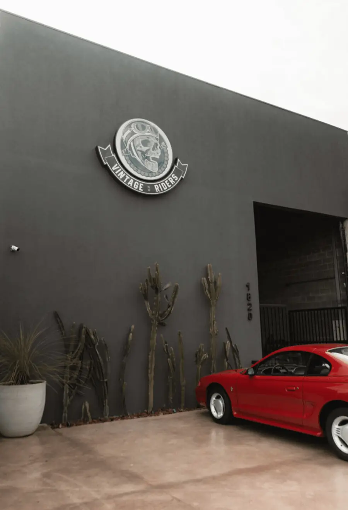

O maior classificado de motos clássicas do Brasil
Somos o maior classificado de motos clássicas e antigas do Brasil e buscamos realizar sonhos e intermediar vendas com o máximo de segurança e tranquilidade para vendedores e compradores.
Com um showroom base em Limeira-SP, contamos com um portfólio de mais de 3 mil motos vendidas e 100% de satisfação. Confira alguns feedbacks dessas vendas no nosso Instagram!
O site existe como uma biblioteca, disponível 24 horas por dia, com todos os veículos organizados por setores. As vendas e intermediações são feitas de forma personalizada pelo WhatsApp.
Além dos anúncios no site e no Instagram, temos o sistema de intermediação, em que todo o processo de venda é feito pelo classificado, e a assessoria para quem quer comprar: pesquisamos e encontramos a moto desejada, fazemos a análise técnica e, se aprovada a compra, realizamos o frete exclusivo até a sua casa ou galpão de coleção.
Lucas Bertolini Mercuri, fundador do Classificado Vintage Riders e colecionador de motos clássicas e antigas.

Venha nos visitar
Nosso showroom em Limeira-SP conta com um acervo de motos clássicas exclusivas.
Rodovia Dr. Cássio de Freitas Levy, 1820 — Jardim Vanessa, Limeira/SP
Seg a sex, 9h às 18h · Sáb, 9h às 12h
Dúvidas frequentes
Qualquer outra questão, estamos à disposição.